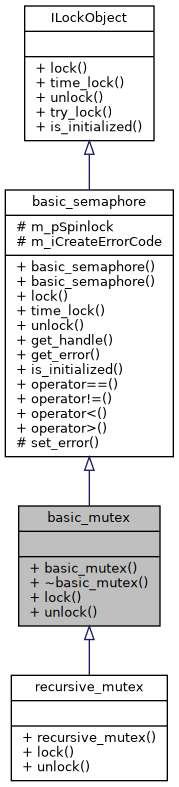
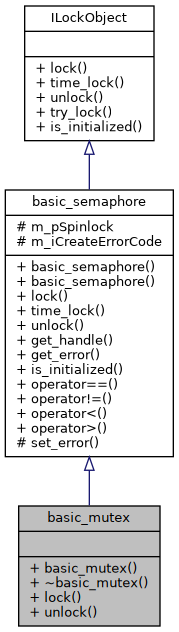
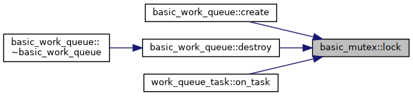
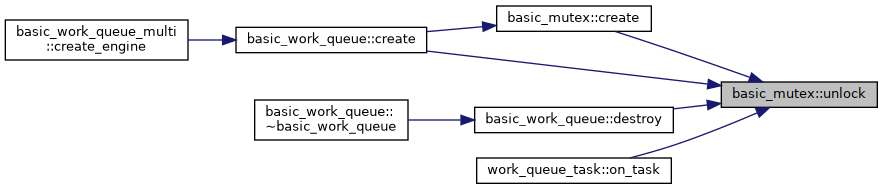

basic_mutex Class Reference
#include <mn_mutex.hpp>
Inheritance diagram for basic_mutex:

Collaboration diagram for basic_mutex:

Public Member Functions | |
| basic_mutex () | |
| virtual | ~basic_mutex () |
| virtual int | create () |
| virtual int | destroy () |
| virtual int | lock (unsigned int timeout=MN_THREAD_CONFIG_TIMEOUT_MUTEX_DEFAULT) |
| virtual int | unlock () |
| virtual bool | try_lock () |
 Public Member Functions inherited from basic_semaphore Public Member Functions inherited from basic_semaphore | |
| basic_semaphore () | |
| bool | is_initialized () const |
| void * | get_handle () |
Additional Inherited Members | |
| Protected Attributes inherited from basic_semaphore | |
| void * | m_pSpinlock |
Detailed Description
Base wrapper class around FreeRTOS's implementation of mutexes. These objects are not recursively acquirable. Calling lock() twice from the same Thread (i.e. task) will deadlock.
Constructor & Destructor Documentation
◆ basic_mutex()
| basic_mutex::basic_mutex | ( | ) |
The Ctor
◆ ~basic_mutex()
|
inlinevirtual |
Here is the call graph for this function:
Member Function Documentation
◆ create()
|
virtual |
Create the Mutex
- Returns
- 'ERR_MUTEX_OK' the mutex are created, 'ERR_MUTEX_ALREADYINIT' the mutex are already created and 'ERR_MUTEX_CANTCREATEMUTEX' on error.
- Note
- When in config "MN_THREAD_CONFIG_MUTEX_CLASS" with MN_THREAD_CONFIG_BINARY_SEMAPHORE then create the mutex with 'xSemaphoreCreateBinary' (esp32 online guids basic) and with 'MN_THREAD_CONFIG_MUTEX_CLASS' create the mutex with 'xSemaphoreCreateMutex'
Reimplemented in recursive_mutex.
Here is the call graph for this function:
Here is the caller graph for this function:
◆ destroy()
|
virtual |
Destroyed the Mutex
- Returns
- 'ERR_MUTEX_OK' the mutex are destroyed or ERR_MUTEX_NOTINIT when mutex not created
Here is the caller graph for this function:
◆ lock()
|
virtual |
Lock the Mutex.
- Parameters
-
Timeout How long to wait to get the Lock until giving up. (default = 0xffffffffUL)
- Returns
- ERR_MUTEX_OK if the Lock was acquired, ERR_MUTEX_LOCK if it timed out. or ERR_MUTEX_NOTINIT when mutex not created
Reimplemented from basic_semaphore.
Reimplemented in recursive_mutex.
Here is the caller graph for this function:

◆ try_lock()
|
virtual |
Try to lock the mutex
- Note
- call lock with timeout from 0
- Returns
- true if the Lock was acquired, false when not
Reimplemented from basic_semaphore.
Here is the call graph for this function:
◆ unlock()
|
virtual |
Unlock the Mutex.
- Returns
- ERR_MUTEX_OK if the Lock was released, ERR_MUTEX_UNLOCK if it failed. or ERR_MUTEX_NOTINIT when mutex not created
Reimplemented from basic_semaphore.
Reimplemented in recursive_mutex.
Here is the caller graph for this function:

The documentation for this class was generated from the following files: